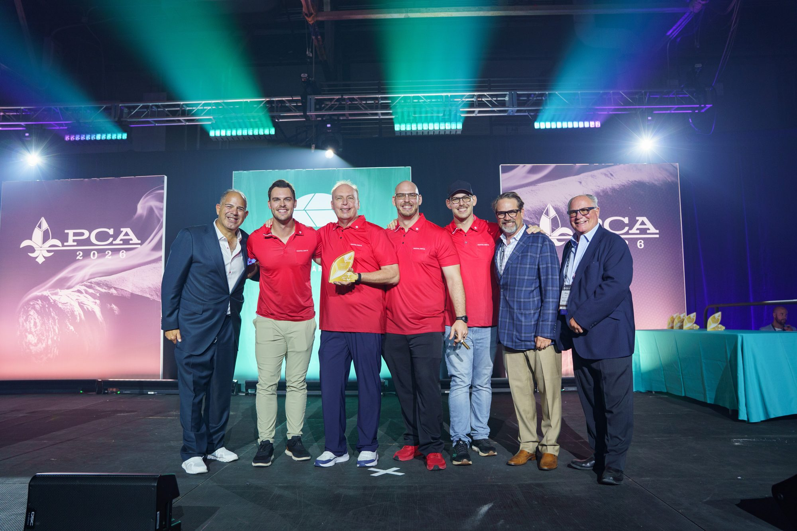
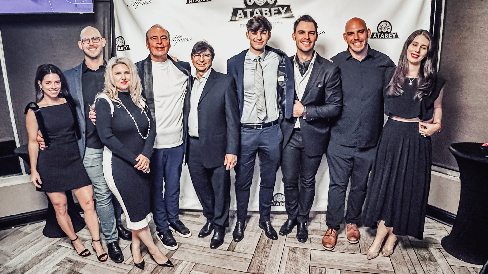

Awards
PCA Best Cigar Lounge, national and international
- PCA / Best of the Leaf, 2024 — first-ever national award win in the Cigar Lounge category, against thousands of US retailers
- Best of the Leaf, 2026 — first-ever multi-time winner, the first year the award opened internationally
- Result: the only lounge to hold both national and international-level recognition from the same body
Trademark
Federally registered service mark (Reg. No. 6,983,189, registered Feb 21, 2023) covering bar, cigar, and smoking lounge services — protecting the ICC name since first use in 2017. A transferable, registered asset.
Press
Recognition we didn't have to chase
Cigar Aficionado, Cigar Journal, Cigar Snob, Gentlemen's Journal, Tobacco Business Magazine. Standouts: the first cigar lounge in the country on DoorDash (2023); a Smoke Shop Magazine 12-page cover feature; a Lightspeed customer success story; and an upcoming stop in the novel Around the World in 80 Cigars (2027).

The Bad Words Podcast
A past ICC production — cigar-side interviews with guests including Rob O'Neill, the Navy SEAL credited with killing Osama Bin Laden, and craftsman Kirby Allison. Surpassed 1 million views.

Industry firsts
Firsts that stuck
World's First Atabey Private Lounge. World's First Principle Cocktail Lounge. Creator of the Luciano Dreamer lounge program. First-ever ground-up cigar-and-whiskey collaborative build, with Luciano Cigars and Ironroot Republic Distillery.